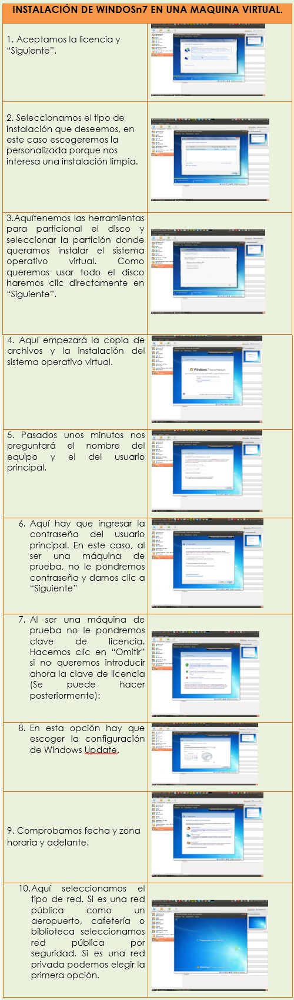

INSTALACIÓN DE UN SISTEMA OPERATIVO EN UNA MAQUINA VIRTUAL
QUE ES UNA MAQUINA VIRTUAL: Una máquina virtual es un software que crea una capa independiente donde se emula el funcionamiento de un ordenador real con todos los componentes de hardware que necesita para funcionar (disco duro, memoria RAM, tarjetas de red, tarjeta gráfica) y que puede ejecutar cualquier sistema operativo o programa, tal y como lo haría un ordenador real.
PARA QUE SIRVE UNA MAQUINA VIRTUAL: Permite emular casi cualquier sistema operativo estándar (Windows, GNU/Linux, MacOS, Android, etc.), y dado que se ejecutan en una capa de software diferente y totalmente aislada, uno de los usos más frecuentes es el de probar diferentes sistemas operativos, programas o configuraciones con total seguridad para tu ordenador real ya que, si algo falla en la máquina virtual, este fallo no afectará en absoluto al ordenador que la ejecuta.
